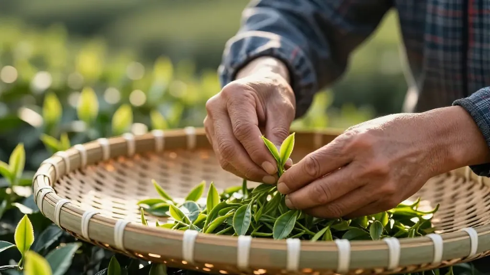

🐬 2026年8月，台风白海豚刚走。
📌 蹭热点开头
昨天还在问"白海豚凭什么浇透小半个中国"，今天它就拍拍尾巴走了，留下一地湿漉漉和一个热搜——"白海豚走了，梭子蟹来了"。
阿凤姐看着窗外终于放晴的天，第一反应不是去买蟹，而是生火煮水：这种天气，不喝对茶，身体比地板还潮。
📌 节气痛点
末伏将至（8月13日，农历六月廿一），今年这个夏天格外缠绵。白海豚刚走，高温高湿双双夹击，空调房里待久了手脚冰凉，一出门口又满身黏腻。中医讲这叫"外湿内寒"，西医叫"电解质紊乱"，阿凤姐讲叫"该喝茶了"。
📌 第一款：陈皮老白茶（祛湿担当）
十年以上的老寿眉，掰一小块新会陈皮。沸水冲下去，枣香混着柑香，一杯下肚从胃里暖到后背。白海豚带来的湿气，靠它慢慢烘出来。适合早上喝，去水肿效果肉眼可见。
📌 第二款：菊花普洱（解暑不伤胃）
生普太寒，熟普太温，加几朵杭白菊刚刚好。电脑前吹了一天空调，眼睛干涩、后颈僵硬，这杯"办公室续命水"比冰美式温柔十倍。记住：菊花要后放，泡太久会苦。
📌 第三款：姜枣红茶（蟹前护胃）
热搜说"梭子蟹来了"，阿凤姐的规矩是——吃蟹前必先饮姜茶。红茶暖胃，老姜驱寒，红枣补血，三样凑齐才叫会过日子。蟹性寒，姜茶是解药；蟹油腻，红茶来刮油。
📌 阿凤姐私房贴士
"爱吃西红柿的人真的赚了"——这话阿凤姐同意，但西红柿偏凉，空腹吃胃不舒服。换成一杯温热的茶饮，番茄红素能吸收的更好，胃也不抗议。
雨后买茶记住三点：
1. 茶叶要"活"：台风天库存容易受潮，买茶先闻干香，霉味陈味一律不要
2. 冲泡要"滚"：水温不够高，祛湿茶等于白喝，老白茶必须100℃沸水
3. 喝茶要"暖"：别贪凉喝冷泡茶，这种天气温饮比冰饮更解渴
📌 尾声
白海豚走了，梭子蟹肥了，阿凤姐的茶壶也响了。
你那边雨停了吗？今晚打算喝什么茶配蟹？留言告诉我，阿凤姐挑三个最会喝的，送一包自家的陈皮老白茶。